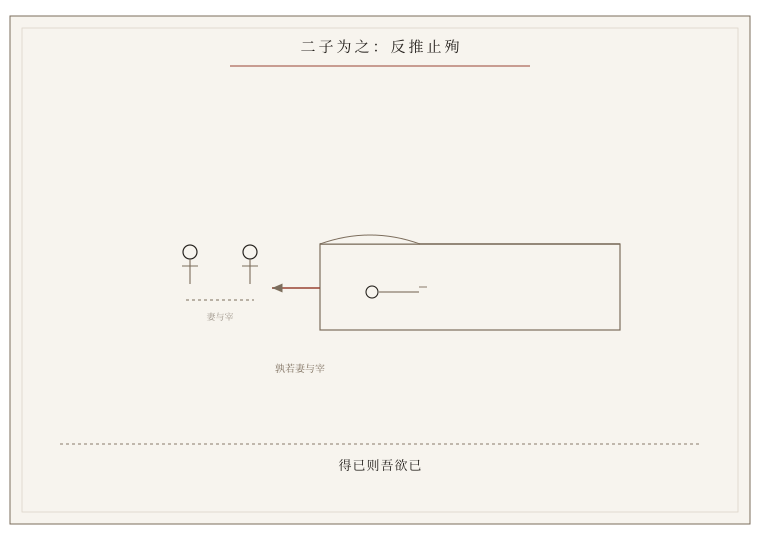

檀弓下 · 四·五十一 · 第 376 课
陈子车死于卫，其妻与其家大夫谋以殉葬，定而后陈子亢至。以告曰：「夫子疾，莫养于下，请以殉葬。」子亢曰：「以殉葬，非礼也。虽然，则彼疾当养者，孰若妻与宰？得已，则吾欲已；不得已，则吾欲以二子者之为之也。」于是弗果用。
说什么事：陈子车死在卫国。他的妻子与家宰商量要以人殉葬，已经定下，陈子亢才到。他们告诉他说：「先生病时，地下无人侍养，请以人殉。」子亢说：「以人殉葬，不合礼。虽说如此，那么地下该侍养他的人，还有谁比妻子与家宰更合适？能作罢，我希望作罢；若不能作罢，我希望就用你们二位来殉。」于是终于没有用。
落在哪一层：以「推」止恶。不硬拦，只把话推到尽头，让提议者自己看见自己。
为何编在此位：上节以守礼者得位，此节以善言者止杀。一守一推，皆不与人争气。
【经】陈子车死于卫，其妻与其家大夫谋以殉葬，定而后陈子亢至。以告曰：「夫子疾，莫养于下，请以殉葬。」子亢曰：「以殉葬，非礼也。虽然，则彼疾当养者，孰若妻与宰？得已，则吾欲已；不得已，则吾欲以二子者之为之也。」于是弗果用。
【注】子车，齐大夫。／子亢，子车弟，孔子弟子。下，地下。／度谏之不能正，以斯言拒之，已犹止也。／果，决。
【疏】此一节论殉葬非礼之事，各依文解之。／知「孔子弟子」者，以《论语》「陈亢问于伯鱼」，与伯鱼相问，故知孔子弟子。又知「子车，齐大夫」者，昭二十六年《左传》齐师围成，鲁师及齐师战于炊鼻，鲁人将击子车，子车射之，殪，郑盖据此谓「齐大夫」。知亢是子车弟者，以子车之妻谋欲殉葬，子亢不能止之，若是子车之兄，当处分由己，故知是子车弟也。／子亢既见兄家谋殉葬非礼之事，自度不能止，故云「殉葬，非礼也」。又云虽非礼，彼疾当养者，彼死者疾病，当须养侍于下者，以外人疏，谁若妻之与宰？言妻、宰最亲，当须侍养。若得休已，不须侍养，吾意欲休已。若其不止，必须为殉葬，则吾欲以妻之与宰二子为之。
陈子车 齐大夫，孔子弟子陈亢之兄。
家大夫 卿大夫之家宰。
殉葬 以活人从葬。
定 已商定。
夫子 指陈子车。
莫养于下 地下无人侍奉。
子亢 陈亢，字子亢（一作子禽），孔子弟子。
孰若 谁比得上。
得已 能够作罢。已，止。
二子者 指妻与家宰二人。
弗果用 终于没有实行。
陈子车死在卫国，他的妻子与家宰商量要以人殉葬，已经定下，陈子亢才到。他们把这事告诉他，说：「先生病时，地下无人侍奉，请以人殉葬。」子亢说：「以人殉葬，不合礼。虽是这样说，那么他那病中该侍奉的人，还有谁比妻子与家宰更合适？能作罢，我希望作罢；若不能作罢，我希望就用你们二位去殉。」于是终于没有用。
此章记一句话止一场杀。子亢先断其非礼，再顺其话头一推，推到无可推处。
没有一句斥责，没有一次争执，事情就停了。
第一层 殉葬之非礼 子亢开口第一句便是断语：「以殉葬，非礼也。」
断语在前，道理在后。 此句不可省——若只推不辩，便成机锋；有机锋而无断语，则止恶之意不明。
第二层 「虽然」：不硬顶的艺术 注云「度谏之不能正，以斯言拒之」。
郑解此句最细：子亢自知「不能正」，故不用正谏，改用一个反问。
此一节教人一件事：道理讲不通的时候，不必加大声量，只需把对方的路走到头。
第三层 「孰若妻与宰」：以亲破亲 殉葬的理由是「莫养于下」，即「地下要有人侍奉」。
子亢顺着这个理由问：按这个理，最该去侍奉的是谁？——是妻、是宰，最亲最近的人。
此一问，把殉葬之说从「随便挑几个人」变成「先殉自己」。 提此议者正是妻与宰二人，于是此问直指其面。
第四层 「得已则吾欲已」：留门 子亢并未说「必殉你二人」，而说「能罢则罢，不能罢则用你二人」。
先给对方一条退路，是这句话能生效的关键。 若只威逼，对方必反弹；留一门，对方自会走那一门。
注云「已犹止也」，正点此字。
第五层 「弗果用」：一个「果」字 注云「果，决」。
此字说明：此事已「定」，非一时之议，而终究未行。已决之事可以中止，此一句给后世留下余地。
第六层 子亢之身份与分寸 疏辨其为子车之弟：「若是子车之兄，当处分由己。」
弟不得处分兄家之事，故只能以言止之，不能以命止之。 此一层最见古人对「谁有权管」的计较——即便所止者为恶，越位亦不可。
子亢的做法，正是「不当家而言」，故其言留有余地，不落断然。
与今日何干 今之劝阻，多在两极：一是不说，一是硬顶。
此章给第三条路：先明是非，再顺着对方的前提推到极端，最后留一扇门。
| 左 | 右 |
|---|---|
| 子车死于卫 | 身在客地 |
| 妻与家大夫谋 | 主张者最亲 |
| 定而后子亢至 | 已成议 |
| 莫养于下 | 殉葬之理由 |
| 非礼也 | 先断是非 |
| 孰若妻与宰 | 顺其理而推 |
| 得已则欲已 | 留一门 |
| 不得已则用二子 | 推到尽头 |
| 弗果用 | 已决可止 |
画室内一具未盖的棺，视点略俯。棺为长框，横置于地。棺内画一人形平卧。棺外左侧并立两个人形，一男一女，皆作低首商议之状，两人之间以一道短竖线相连。两人之前上方画一支箭头，箭头不是指向棺内，而是从棺内反指回这两个人。不画文字。赭色只用在那支反向箭头的箭头上。
